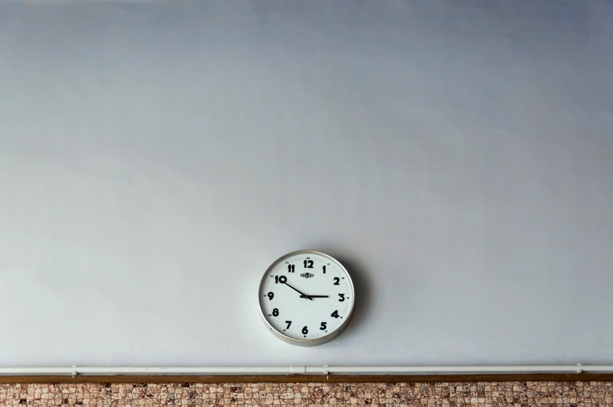

BUSY =
STATUS SYMBOL
STATUS SYMBOL

I'M SO BUSY
= NOTICE I'M IMPORTANT
HOW ARE YOU?
BUSY.

(NOT AN EMOTION)
WE'RE ALL TIRED

SOME BRAG:
LONG HOLIDAYS
LONG HOLIDAYS

OTHERS BRAG:
NO FREE TIME
NO FREE TIME
SAME PLANET, OPPOSITE BRAG
RESPONSIBLE
NEEDED
= VALUABLE
MEETINGS ABOUT
MEETINGS
MEETINGS

PROVING YOU'RE
NEAR THE WORK
NEAR THE WORK